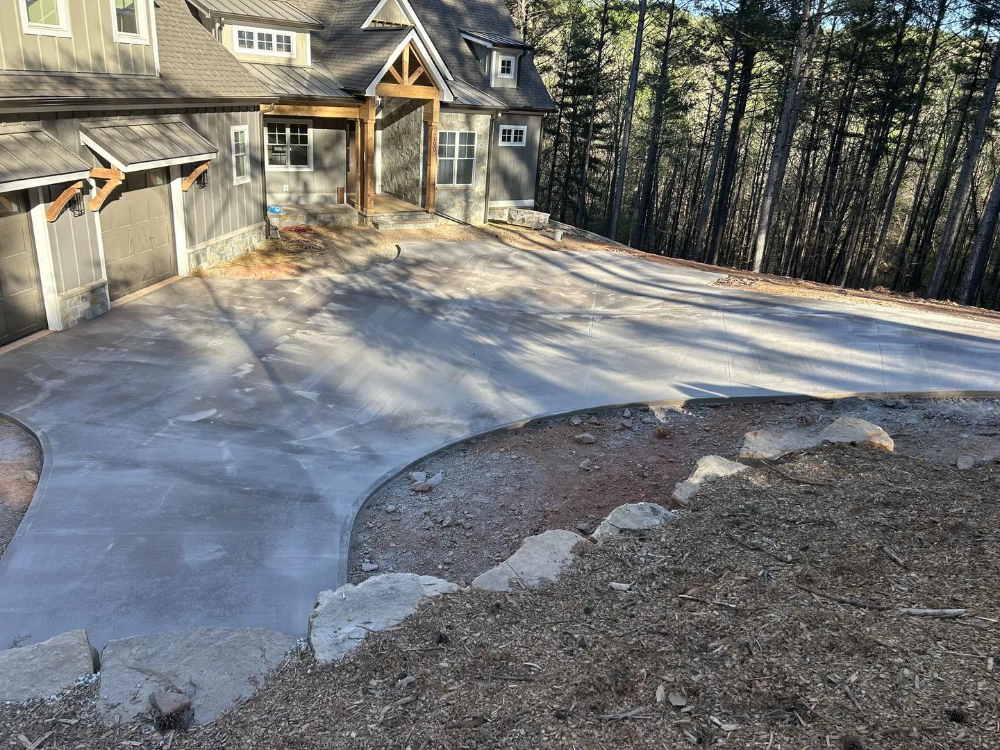

← All service areas
Transylvania County, North Carolina
Concrete driveways & sidewalks in Transylvania County.
Planning a new driveway, a wider parking area or a path around your home? Our EBC team can review the concrete work you have in mind.

Choose the concrete work you need.
Sidewalks & steps
View serviceRequest this workPatios
View serviceRequest this workSlabs & foundations
View serviceRequest this workPlanning a patio and the path to it
Send a view from the back door and from the yard. Show the proposed patio edges, nearby planting and the route for bringing equipment to the work area.
The estimate will identify preparation, removal where needed, dimensions and the agreed finish. Any plans, permits or inspections required for your property must be reviewed before construction.
See work by our EBC team.
Browse our driveway, patio and walkway projects to discuss the layout and finish you prefer.
Arrange a project visit in Transylvania County.
We are based in Greer, South Carolina. For projects in Transylvania County, North Carolina, send the exact address, photos, approximate measurements and your preferred timing. We confirm travel and scheduling for your location before arranging a visit.
Call Edgar about your project. If he is unavailable, Noemí can help with your request and arrange the next step.